Каждый экран, каждая кнопка. Приложение работает офлайн, данные хранятся только на телефоне.
| Иконка | Экран | Что там |
|---|---|---|
| Главная | Баланс, счета, недавние операции, кнопка добавления | |
| История | Все операции с поиском и фильтрами | |
| Статистика | Графики, календарь-теплокарта, отчёт месяца | |
| Кошелёк | Курсы, счета, платежи, долги, цели, накопления | |
| Настройки | Профиль, тема, язык, валюта, уведомления, гид |
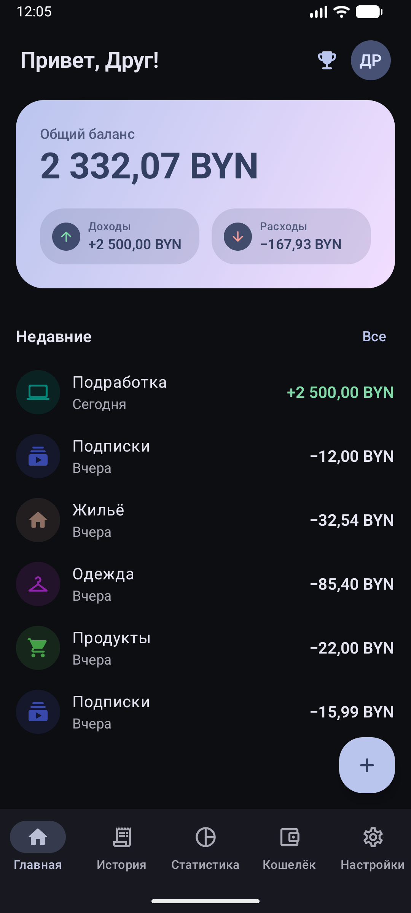
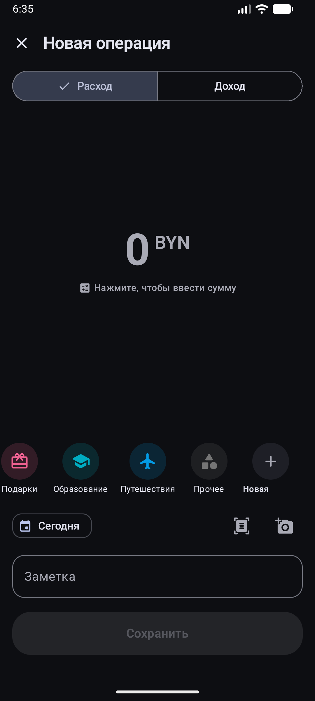
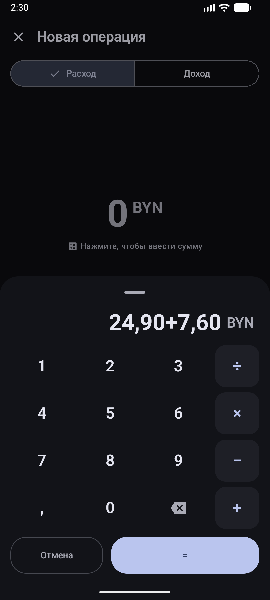
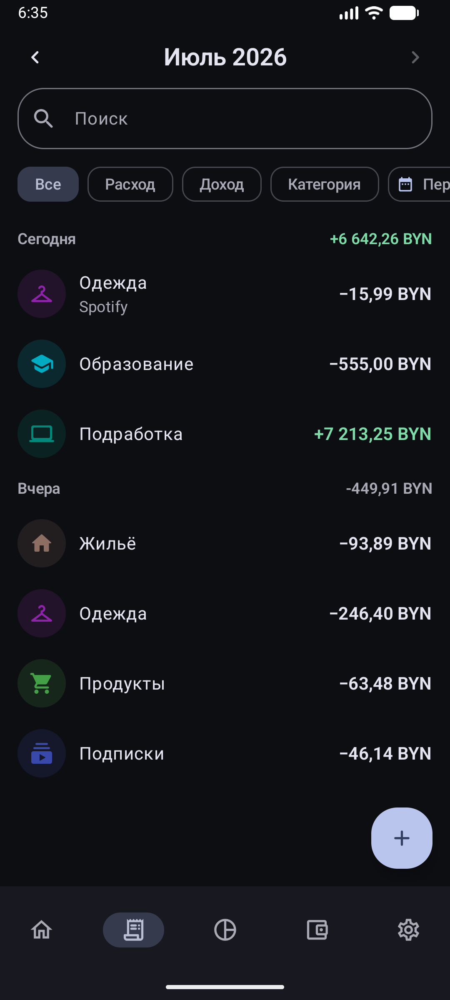
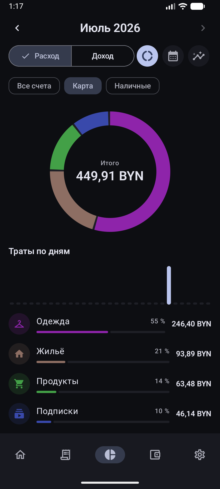
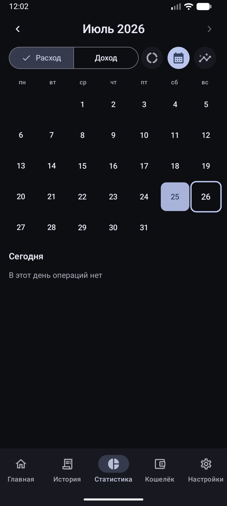
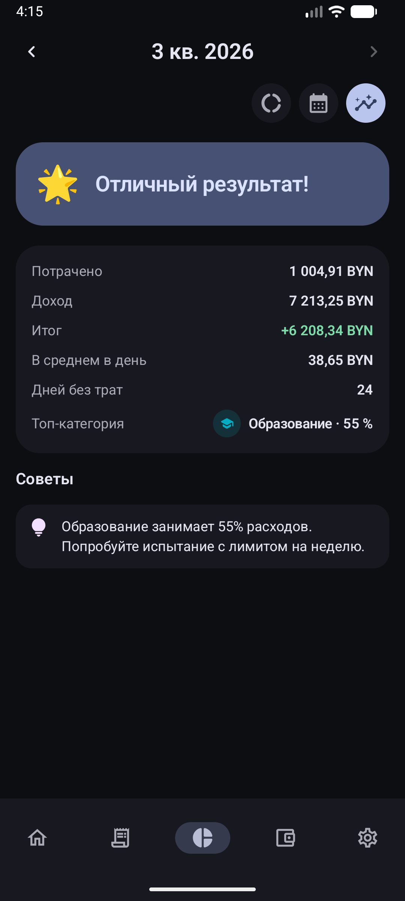
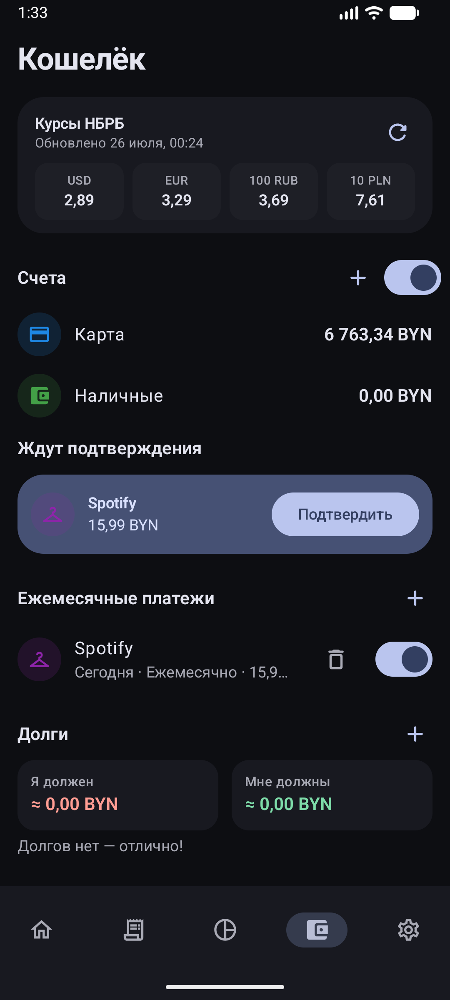
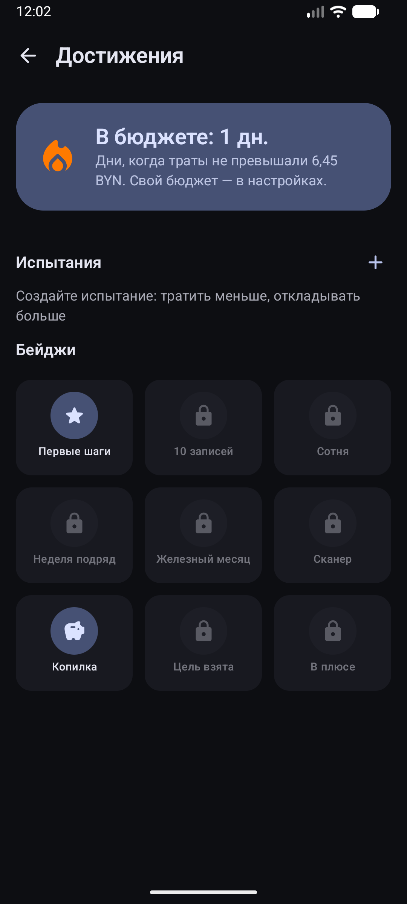
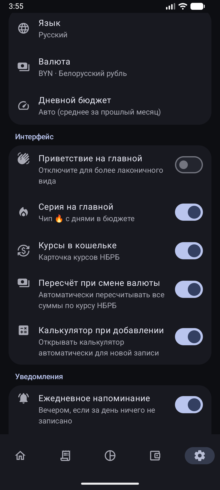
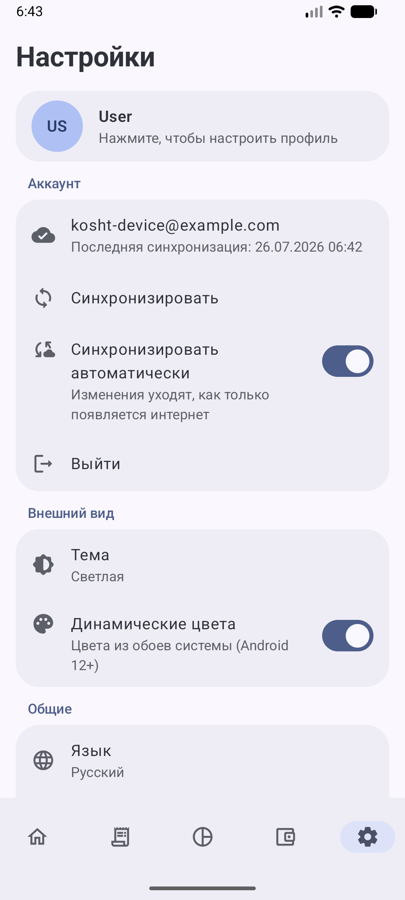